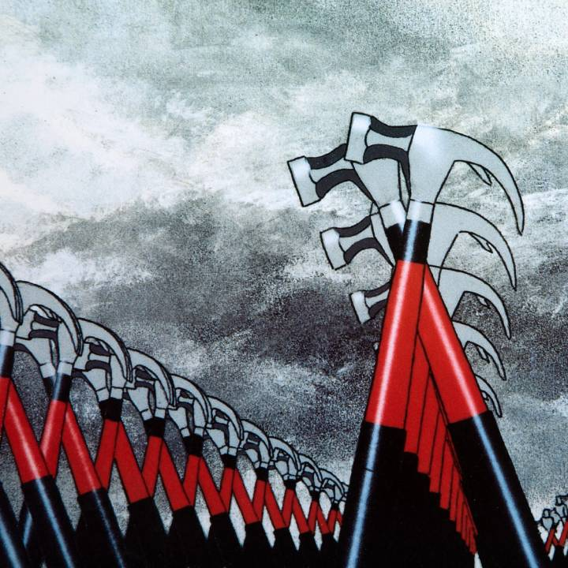

The Wall
Wydany: 30 listopada 1979 | Wytwórnia: Harvest Records | Format: Podwójny album
O albumie
"The Wall" to jedenasty album studyjny Pink Floyd i jeden z najbardziej ambitnych projektów w historii muzyki rockowej. Ten podwójny album koncepcyjny opowiada historię Pinka, fikcyjnego rockowego artysty, który buduje metaforyczny mur między sobą a światem zewnętrznym jako mechanizm obronny przed traumami życiowymi.
Album został stworzony głównie przez Rogera Watersa i jest w dużej mierze autobiograficzny. Waters czerpał inspirację z własnych doświadczeń – śmierci ojca podczas II wojny światowej, opresyjnego systemu edukacji w Anglii lat 50., oraz rosnącej alienacji, którą czuł jako członek megapopularnego zespołu rockowego. Incydent, podczas którego Waters splunął na agresywnego fana podczas koncertu w Montrealu w 1977 roku, był katalizatorem dla koncepcji albumu.
"The Wall" to opera rockowa składająca się z 26 utworów, które tworzą spójną narrację o izolacji, szaleństwie, faszyzmie i ostatecznym wyzwoleniu. Album łączy elementy rocka progresywnego, hard rocka, opery i muzyki teatralnej, tworząc monumentalne dzieło, które wykracza poza tradycyjne granice muzyki rockowej.
Ikoniczne okładki i grafiki

Oryginalna okładka albumu
Zaprojektowana przez Geralda Scarfe, minimalistyczna okładka przedstawia białe cegły tworzące mur. Prostota projektu kontrastuje z kompleksowością muzyki i opowieści zawartej w albumie. Brak jakichkolwiek napisów na przedniej okładce był celowym zabiegiem artystycznym.

Maszerujące młoty Geralda Scarfe
Ikoniczne maszerujące młoty stały się symbolem faszystowskiej opresji przedstawionej w albumie. Gerald Scarfe stworzył mroczne, surrealistyczne ilustracje, które były używane podczas koncertów i w filmowej adaptacji z 1982 roku. Młoty reprezentują ślepą, mechaniczną przemoc totalitaryzmu.
Lista utworów
| DYSK 1 | |||
|---|---|---|---|
| Nr. | Tytuł | Długość | Opis |
| 1. | In the Flesh? | 3:20 | Otwarcie koncertu Pinka, wprowadzenie do historii |
| 2. | The Thin Ice | 2:30 | Ostrzeżenie o kruchości życia i nieuchronności bólu |
| 3. | Another Brick in the Wall (Part 1) | 3:09 | Śmierć ojca Pinka podczas wojny |
| 4. | The Happiest Days of Our Lives | 1:46 | Sadystyczni nauczyciele i opresyjny system edukacji |
| 5. | Another Brick in the Wall (Part 2) | 3:59 | Hymn przeciwko edukacyjnej indoktrynacji - największy hit zespołu |
| 6. | Mother | 5:32 | Nadopiekuńcza matka budująca kolejną cegiełkę w murze |
| 7. | Goodbye Blue Sky | 2:45 | Wspomnienia z dzieciństwa podczas II wojny światowej |
| 8. | Empty Spaces | 2:10 | Pytania o to, jak wypełnić pustkę w życiu |
| 9. | Young Lust | 3:25 | Pink jako gwiazda rocka szukająca przelotnych romansów |
| 10. | One of My Turns | 3:35 | Psychiczny załamanie Pinka i przemoc wobec groupie |
| 11. | Don't Leave Me Now | 4:16 | Rozpad małżeństwa Pinka |
| 12. | Another Brick in the Wall (Part 3) | 1:18 | Ostateczne zamknięcie się za murem |
| 13. | Goodbye Cruel World | 1:13 | Pink całkowicie izoluje się od świata |
| DYSK 2 | |||
|---|---|---|---|
| Nr. | Tytuł | Długość | Opis |
| 1. | Hey You | 4:40 | Wołanie o pomoc zza muru |
| 2. | Is There Anybody Out There? | 2:44 | Samotność i desperackie poszukiwanie kontaktu |
| 3. | Nobody Home | 3:26 | Pink w izolacji, otoczony luksusami, ale emocjonalnie pusty |
| 4. | Vera | 1:35 | Wspomnienie Vera Lynn i nostalgii wojennej |
| 5. | Bring the Boys Back Home | 1:21 | Antywojennie przesłanie o powrocie żołnierzy |
| 6. | Comfortably Numb | 6:23 | Jeden z najsłynniejszych utworów - Pink odrętwiony przed koncertem |
| 7. | The Show Must Go On | 1:36 | Przygotowania do kontynuacji koncertu pomimo stanu Pinka |
| 8. | In the Flesh | 4:15 | Pink jako faszystowski dyktator na scenie |
| 9. | Run Like Hell | 4:19 | Paranoiczne ostrzeżenie przed "obcymi" |
| 10. | Waiting for the Worms | 4:04 | Faszystowska fantazja Pinka osiąga szczyt |
| 11. | Stop | 0:30 | Pink przerywa swoje szaleństwo |
| 12. | The Trial | 5:13 | Surrealistyczny proces sądowy Pinka |
| 13. | Outside the Wall | 1:41 | Epilog - nadzieja na ponowne połączenie z ludźmi |
Całkowity czas trwania: 81:00 (2 płyty winylowe / 1 CD)
Osiągnięcia i wyróżnienia
Sprzedaż globalna
Ponad 30 milionów sprzedanych kopii na całym świecie
Billboard 200
Miejsce #1 w USA
Certyfikaty USA
23× Platyna (RIAA) - jako podwójny album
Another Brick in the Wall (Part 2)
Jedyny singiel Pink Floyd, który osiągnął #1 w USA i UK
Grammy 1982
Nominacja do Grammy za Best Rock Vocal Performance
Film 1982
Adaptacja filmowa z Bobem Geldofem, reżyseria: Alan Parker
Spektakularne koncerty The Wall
Koncerty "The Wall" były jednymi z najbardziej ambitnych i kosztownych produkcji w historii muzyki rockowej. Zespół wystawił tylko 31 pokazów w 4 lokalizacjach (Los Angeles, Nowy Jork, Londyn i Dortmund) w latach 1980-1981, ponieważ produkcja była niezwykle skomplikowana i droga.
Centralnym elementem show było budowanie prawdziwego muru z kartonowych cegieł między zespołem a publicznością podczas koncertu. Mur miał 9 metrów wysokości i 50 metrów szerokości. W miarę postępu koncertu, mur był stopniowo budowany, aż zespół całkowicie znikał za nim. Na murze wyświetlano animacje Geralda Scarfe'a, a podczas finału mur spektakularnie się zawalał.
Show zawierało również gigantyczne nadmuchiwane kukły (Matka, Nauczyciel, Sędzia), samolot rozbijający się o mur, oraz 40-metrową nadmuchiwaną świnię. Roger Waters często występował jako Pink, odgrywając psychiczne załamanie postaci. Produkcja wymagała 40-osobowej ekipy technicznej i kosztowała fortunę, ale stała się legendą rocka teatralnego.
Analiza kluczowych utworów
Another Brick in the Wall (Part 2)
Największy komercyjny hit Pink Floyd, osiągający #1 w ponad 20 krajach. Utwór jest protestem przeciwko opresyjnemu systemowi edukacji. Słynny refren śpiewany jest przez chór dzieci z Islington Green School w Londynie.
Ironicznie, niektóre szkoły zakazały uczniom słuchania tej piosenki, nie rozumiejąc, że Waters protestował przeciwko indoktrynacji i tłumieniu indywidualności, nie przeciwko edukacji jako takiej. Groove disco i funkowy bas Watersa sprawiły, że utwór był grany w klubach tanecznych, co było zaskakujące dla zespołu progresywnego.
Comfortably Numb
Uważany przez wielu za najlepszy utwór Pink Floyd. "Comfortably Numb" przedstawia Pinka przed koncertem, odrętwionego przez leki podane przez lekarza, aby mógł wystąpić pomimo swojego załamania psychicznego. Dialog między Watersem (lekarz) a Gilmourem (Pink) tworzy dramatyczne napięcie.
Gitarowe solo Davida Gilmoura w tym utworze jest powszechnie uznawane za jedno z najlepszych w historii rocka. Gilmour użył swojej Fender Stratocaster i wzmacniacza Hiwatt, tworząc emocjonalne, śpiewające tony, które doskonale oddają emocjonalną pustkę i desperację Pinka. Magazyn Guitar World umieścił to solo na #4 miejscu listy 100 Greatest Guitar Solos.
The Trial
Finałowy utwór przed epilogiem, "The Trial" to surrealistyczny proces sądowy w stylu Gilbert & Sullivan. Pink staje przed sądem, gdzie oskarżają go różne postacie z jego życia – Nauczyciel, Matka, Żona. Sędzia wydaje wyrok: "Tear down the wall!" (Zburzcie mur!).
Utwór łączy elementy opery, musicalu i rocka progresywnego. Bob Ezrin, współproducent albumu, napisał orkiestrację. Podczas koncertów i w filmie, ten moment był kulminacją show – gigantyczny mur dosłownie się zawalał, symbolizując psychiczne wyzwolenie Pinka i możliwość ponownego połączenia się z ludźmi.
Film "Pink Floyd – The Wall" (1982)
W 1982 roku ukazała się filmowa adaptacja albumu w reżyserii Alana Parkera, z Bobem Geldofem (lider The Boomtown Rats) w roli Pinka. Film rozszerza narrację albumu, dodając wizualną interpretację historii Pinka i jego psychicznego rozpadu.
Film zawiera minimalne dialogi – większość narracji jest przekazywana przez muzykę i surrealistyczne sekwencje animowane przez Geralda Scarfe'a. Animacje te, przedstawiające maszerujące młoty, pożerające kwiaty i inne mroczne obrazy, stały się ikoniczne i są nieodłącznie związane z albumem.
Film był kontrowersyjny ze względu na graficzne sceny przemocy, seksu i faszystowskiej symboliki, ale został uznany za jedno z najlepszych muzycznych dzieł filmowych. Roger Waters miał ogromny wpływ na produkcję, choć jego relacje z reżyserem Alanem Parkerem były napięte. Film zarobił ponad 22 miliony dolarów i zyskał status kultowego.
Ciekawostki
- Album był nagrywany w trzech różnych studiach: Britannia Row, Super Bear i Producers Workshop
- Bob Ezrin, producent znany z pracy z Alice Cooperem, pomógł Watersowi ustrukturyzować narrację albumu
- David Gilmour początkowo był sceptyczny wobec projektu i uważał, że album jest zbyt autobiograficzny dla Watersa
- Chór dziecięcy w "Another Brick in the Wall (Part 2)" został nagrany bez zgody władz szkolnych, co wywołało kontrowersje
- Podczas koncertów w Los Angeles, mur był budowany z 420 kartonowych cegieł, z których każda ważyła 18 kg
- Roger Waters wykonał solową wersję The Wall w Berlinie w 1990 roku, celebrując upadek Muru Berlińskiego
- Album został zremasterowany w 2011 roku przez Jamesa Guthrie z dodatkowymi materiałami demo
- W 2010-2013 Waters odbył światową trasę "The Wall Live", która stała się najlepiej zarabiającą trasą solowego artysty w historii
Wpływ kulturowy i dziedzictwo
"The Wall" to więcej niż album – to kulturowy fenomen, który wpłynął na muzykę, film, teatr i sztukę wizualną. Album udowodnił, że rock może być medium dla kompleksowych narracji i głębokich komentarzy społecznych. Jego tematy – izolacja, trauma wojenna, opresja edukacyjna, faszyzm – pozostają uniwersalne i aktualne.
Album zainspirował niezliczone zespoły do tworzenia własnych oper rockowych i albumów koncepcyjnych. Jego teatralna natura wpłynęła na rozwój rocka progresywnego i metalu progresywnego w latach 80. i 90. Maszerujące młoty i inne symbolika wizualna Geralda Scarfe'a stały się ikonami kontrkultury.
"The Wall" jest również ostatnim wielkim dziełem klasycznego składu Pink Floyd. Po tym albumie, napięcia między Watersem a resztą zespołu doprowadziły do rozpadu i długich batalii prawnych. Ale mimo trudności w jego tworzeniu, "The Wall" pozostaje monumentalnym osiągnięciem – testament do mocy muzyki jako narzędzia do opowiadania historii i eksploracji ludzkiej kondycji.